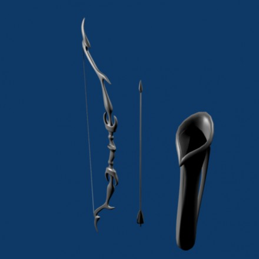

Space Lion on game assets

Hello, I want to talk about several aspects of making game assets. Some of them will refer to the free open source software Blender, but some of them will be valid in a more general way.
If you’re already an expert who makes 3d game assets for a living, this introduction might not be that much of a gain to you. There are other wiki pages describing how to get your Blender assets into a jME3 game or asset pack.
Well, that said, let’s start…
1. Different 3d modeling workflows
There are many ways to model a 3d asset:
Low-Poly-First
High-Poly-First
3D-Scan-First (a special kind of High-Poly-First)
Topology-Sculpting
1.1 Low-Poly-First
Based on reference images (drawn concept art or photographs or blueprints) you create a low-poly-mesh in a 3d modeling tool such as Blender. If you just want a quick test, you can stop here - just give your low-poly-mesh a material such as “wood or “iron or some procedural texture (NeoTexture plugin).
But if you want higher quality game assets you will continue: Next, you would create an UV layout. This step is explained later in this tutorial. Basically the UV layout is needed for textures and normal maps.
In order to get a fancy normal map for your low-poly-mesh, you would now add a “Multiresolution modifier, so you can sculpt details. There are two Multires modifiers available in Blender: “Catmull-Clark and “Simple (see image below)

When should you use which? Here is a comparison table:
| Catmull-Clark | Simple |
|---|---|
+ good for 'organic' models | + good for 'technical' models |
+ auto-smoothes everything | + keeps sharp features |
|
|
Basically the teeth of a space monster need to be sharp, and I didn’t find a good way - so I used “Simple first and then later, I used the smooth brush in sculpt mode. Maybe someone has a good idea for me?
Another question is: Do I first give the model a texture or do I first sculpt the details? In my case, I did texture first, then sculpt the details - I was able to orient on the veins and other areas of the model. If you sculpt first, you will have to switch on the highest details of the Multires during texturing, which is slow. So, texture first is usually better.
1.2 High-Poly-First
This workflow is best for technical stuff like “buildings or “sci-fi-weapons. It would not make sense, to sculpt on these objects like you would on an organic model. Instead, you create a very high-poly-mesh that has lots of little details like ridges, screws, gears, lamps, power cables, and so on.
When you’ve finished this stage, you will now create a copy of the high-poly-version. In the copy you would find some key vertices that you find good and which represent the overall shape in the best possible way. You will delete all the other vertices, and maybe create some more in a similar way, but all low-poly this time.
In the next stage you would create an UV layout for textures in the low-poly-version and project the high-poly-mesh of the original onto the low-poly-mesh via texture baking, using the “Bake > Normals section in the “Render tab of the “Properties view of Blender. You must first select the high-poly-mesh, then shift-select the low-poly-mesh and chose [x]“Selected to Active.
For a detailed workflow description of the baking-normals-process, there will be a section later in this tutorial, that will cover this subject.
Another important note here: If you try to make “water tight models, needed for certain 3D algorithms, then you would normally only do this for the low-poly-version of your model. The high-poly-version can be modelled faster, because you will only need it as a base for the normal map or maybe for some still-render cutscenes.
1.3 3D-Scan-First
This workflow is similar to the “High-Poly-First workflow. The original mesh is obtained via 3D scanning. If you don’t know a lot about 3D scanning: You will be surprised how many good and cheap ways there are to get a 3D scan! Getting 3D scans can be as easy as using a free tool together with your webcam or mobile phone.
You would then polish the 3D scan with tools like “Meshlab, to get a nice and complete version of your 3D Scan. Usually the scan will now consist of a vertex colored triangle mesh with a very high polygon count.
The rest is similar to the High-Poly-First way of doing things: Make a copy of the high-poly-version, select some vertices and delete the others. You now have a low-poly-version. All you have to do now, is finding a way to project the vertex colors of the high-poly-version onto the low-poly-version as a texture - you would use texture baking for this (detailed description will follow).
1.4 Topology-Sculpting
This workflow relies on a 'sculpting mode all from the start' approach: You sculpt the mesh from the beginning on and later you work similar to the 3D-Scan-First workflow (retopo the mesh and get a low poly version). In this video you can see somebody modeling a demon face with horns:
2. Several hints for making game art
| You want to… | What you need to do: |
|---|---|
Make humans | Get “makehuman +use it +export your humans to Blender +polish them +import them via the jME SDK. |
Sculpt like a pro | Blender’s sculpting mode is enough for beginners like me. +However, there are other tools like “Sculptris, “Z Brush, “Mudbox and more |
Make sci-fi assets | Get yourself a collection of “greebles (little surface details and gismos) +combine them in numerous ways, +to achieve the high-poly sci-fi model of your dream +or just doom-style walls and machines +look for “shipyard 0.7 on BlendSwap.com |
Get free models | Look at “OpenGameArt.org, “BlendSwap.com, “Turbosquid.com or similar sites +“OpenGameArt: Lots of models, all of them for games, not all of them Blender, all free +“BlendSwap: Lots of models, not all of them for games, all of them Blender, all free +“Turbosquid: Lots of models, not all of them for games, not all of them Blender, not all free +you will find a lot of models and textures on the internet. * |
(*) When they are licensed under CC0 or CC-BY, you can easily use them. CC-BY requires you to mention the original artist in a certain way in your games “credits roll. Some very good models are under CC-BY-SA, which means that your program must be under open source license when you want to use these models. Other licenses are LGPL (similar to CC-BY) and GPL (similar to CC-BY-SA). There are other licenses, licensing can be a complex topic…
2.1 Style: Old School versus New School
Here is what I mean by those two different styles:


This is a typical New School bow for a fantasy setting:

| Old School | New School |
|---|---|
| + looks “cool |
+ usually less work needed |
|
+ less details render faster |
|
+ good enough for prototyping | + more appealing to many modern gamers |
+ cheap items for lower-level game characters | + helps visualize maxed-out game characters |
+ cultural style: humans, androids, … | + cultural style: elves, telepathic aliens, … |
2.2 Style: Comic-look versus Realistic look
There are great differences between a scene that was made to look realistic and a scene that has this certain “comic-look (usually characters with crazy proportions: big heads, big eyes, extremely thin arms and legs).
| Comic-look | Realistic look |
|---|---|
+ can be achieved very quickly +(usually no normal maps etc.) |
|
+ more artistic freedom |
|
| + suitable for simulations and AAA games |
| + can make use of motion capturing |
+ can be combined with hand-made textures |
|
| + easy to find models, because style always the same |
+ can make violence look sweet |
|
This comparison is not complete by far. I’m quite sure that there are more lenses that you could observe these two opponents and compare them, to find the best suitable for your project.
2.3 Style: Be consistent!
Whatever your style/look for your 3D project is - you should be consistent when making the art assets. What this means? Stick to one way of doing things, so that all art assets fit together harmonically. Usually this means that you will have a hard time doing your comic-look world or your fantasy / sci-fi setting.
There are several parameters that must match:
| What must I consider? |
|---|
high details vs low details |
fantasy tech vs logically engineered tech |
funny games vs serious games / simulations |
toon shading vs simple shading vs photorealistic shading |
colors and post processing filters should fit well |
old school vs new school |
comic look vs realistic look |
… |
2.4 New Low Poly modeling
There is an old way of doing Low-Poly and there is a new way of doing Low-Poly: In old games, you often saw assets with an ultra low poly count, mainly focussed on triangles. In newer game art you can often see lots of quads instead of triangles, which is mainly because this works best together with sculpting and animations.
2.5 LOD (Levels Of Detail)
The jME engine supports LOD - the same model is represented in several ways: From high-detail to low-detail. The high-detail levels show the whole geometry (which is typically 10000 triangles for modern game characters), the lower levels reduce this geometry (you can actually control how many polygons, e.g. 5000, 2500, 1250, 625, …). The further away your model is, the fewer polygons are needed to represent its shape, because it will only be a few pixels large when this far away.
Both the Ogre-exporter and the jME SDK provide ways to configure the LOD steps of your model.
2.6 Multiple versions for different purposes
In addition to LOD, you might be interested in providing several versions of your model, for different purposes. Here are some examples of what I mean:
Shotgun model: a) equipped or laying around / b) during reloading, with open-barrel-animation
Rocket launcher model: a) version with 4 rocket heads / b) version with 3, 2, 1, 0 rocket heads
Rocket launcher model: a) version with closed hatch / b) version with open hatch and warhead
Car model: a) without a scratch / b) somewhat damaged, heavily damaged, totally wrecked
3d Chat smiley: a) neutral face / b) workaround* for extreme shape change: laughing, surprised, angry…
Evil samurai-demons: a) normal shape / b) sliced in two parts (several versions)
(*) This workaround will not be necessary anymore as soon as the engine allows for shape key deformation animations. You can also rig a face with bones, if you know how to do it well.
3. UV mapping
3.1 Seams-Unwrap versus Auto-Unwrap
3.2 Few Isles versus Many Isles
3.3 Large Isles versus Small Isles
3.4 Margins - the answer to color bleeding
3.5 Details by Mesh versus Details by Texture
4. Rigging basics
4.1 Different types of rigs
4.2 Skinning with vertex group editing
4.3 Skinning with weight painting
4.4 Finding unassigned vertices
4.5 Posing with bone constraints
5. Texturing
5.1 Painting basic texture colors in 2d
5.2 Painting texture details in 3d
5.3 Baking texture with margin around isles
5.4 Other types of handmade textures
5.5 Baking normal maps
5.6 Other baking techniques
5.7 Texture coordinate recycling
5.8 Texture atlas sharing
5.9 Human faces and bodies
The End
Bye bye, polygon land, the Space Lion now rests to sleep. He will dream of digitally animated antilopes. He will dream of a glorious future for his favorite open source modeling tool. He will dream of the monkeys that live on their Java island. Another day, another project…